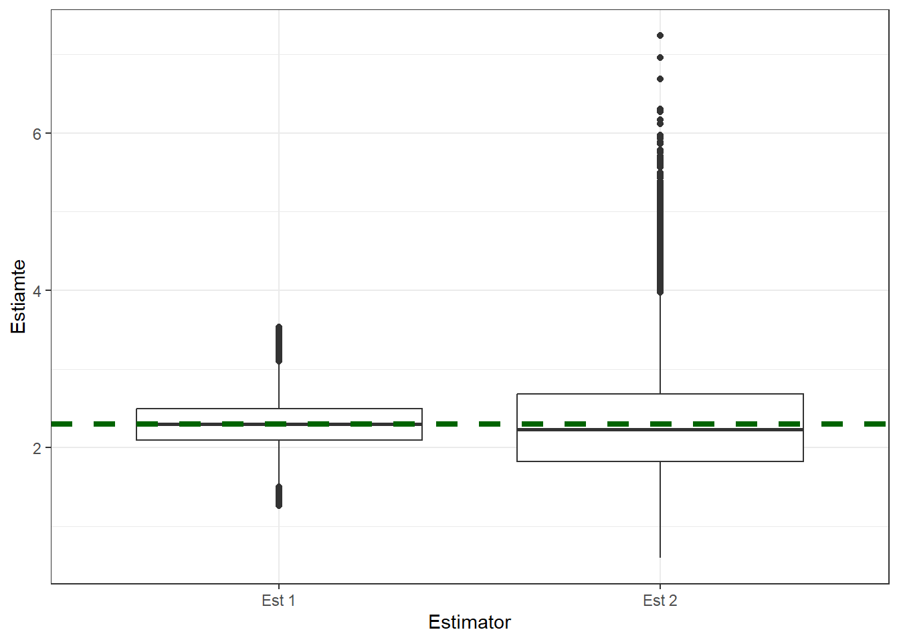
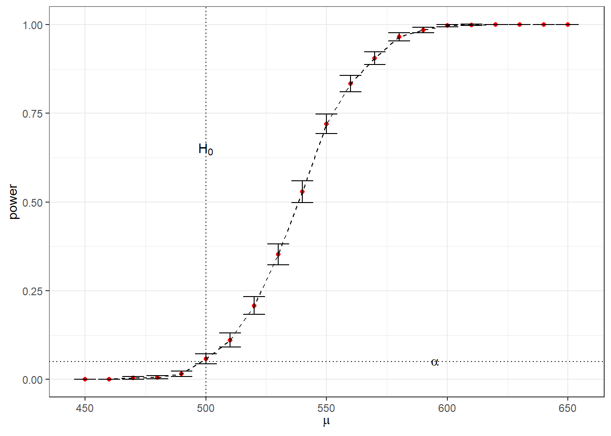
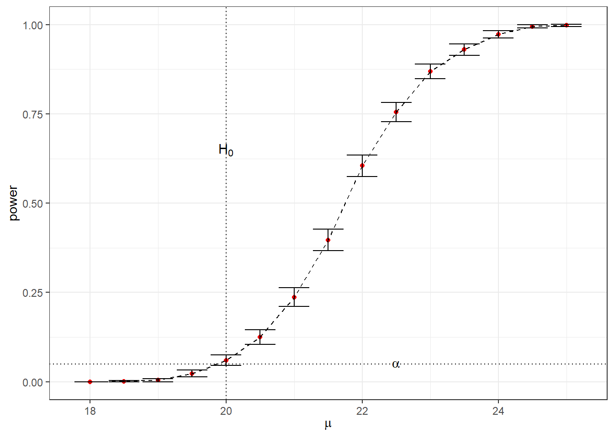
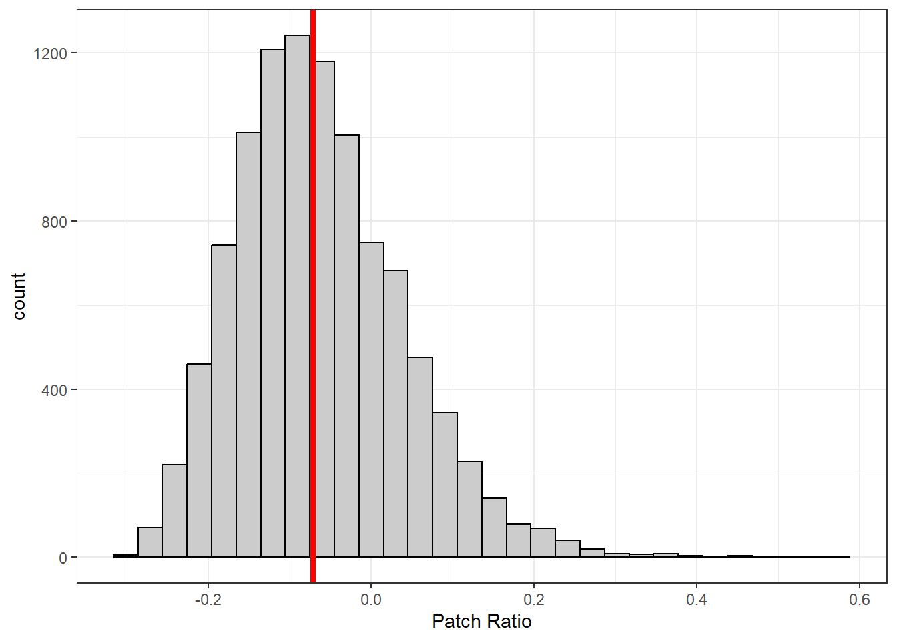

```{r}
set.seed(5172013)
```Day 5 Lab Solutions Monte Carlo Methods in Inference
Mean Squared Error (MSE) and Bias
Simulate 1000 data sets with 30 \(Poisson(\lambda = 2.3)\) realizations in each data set
```{r}
sim_size <- 100000
sample_size <- 30
pois_lambda <- 2.3
pois_data <- matrix(
rpois(n = sim_size * sample_size, lambda = pois_lambda),
nrow = sim_size,
ncol = sample_size
)
```Define two types of estimators
```{r}
pois_est1 <- function(pois_counts){
return(mean(pois_counts))
}
pois_est2 <- function(pois_counts){
return(var(pois_counts))
}
```Apply the two estimators to the simulated data
```{r}
est_vec1 <- numeric(sim_size)
est_vec2 <- numeric(sim_size)
for (i in 1:sim_size){
est_vec1[i] <- pois_est1(pois_data[i,])
est_vec2[i] <- pois_est2(pois_data[i,])
}
```Plot box plots of the two sampling distributions
```{r}
library(ggplot2)
est_df <- data.frame(
Estimator = c(rep("Est 1", length(est_vec1)), rep("Est 2", length(est_vec2))),
Estiamte = c(est_vec1, est_vec2)
)
ggplot(data = est_df, mapping = aes(x = Estimator, y = Estiamte)) +
geom_boxplot() +
geom_hline(yintercept = pois_lambda, color = "darkgreen", linetype = "dashed", size = 1.5) +
theme_bw()
```Warning: Using `size` aesthetic for lines was deprecated in ggplot2 3.4.0.
ℹ Please use `linewidth` instead.
Compute MSE for both estimators
```{r}
(mse1 <- mean((est_vec1 - pois_lambda)^2))
(mse2 <- mean((est_vec2 - pois_lambda)^2))
```[1] 0.07624437
[1] 0.4405612Compute Monte Carlo errors
```{r}
(mse1_mc_error <- sd((est_vec1 - pois_lambda)^2) / sqrt(sim_size))
(mse2_mc_error <- sd((est_vec2 - pois_lambda)^2) / sqrt(sim_size))
```[1] 0.0003436271
[1] 0.00239868and intervals
```{r}
(c(mse1 - 1.96 * mse1_mc_error, mse1 + 1.96 * mse1_mc_error))
(c(mse2 - 1.96 * mse2_mc_error, mse2 + 1.96 * mse2_mc_error))
```[1] 0.07557086 0.07691788
[1] 0.4358598 0.4452627Exercise 1
Compute biases of the above estimators via Monte Carlo. Can you say with some confidence whether these biases are 0 or not?
Compute coverage of the 95% confidence intervals of the first estimator (the one that uses sample mean). Can you tell if your estimated coverage is different from 0.95?
Exercise 1 Solutions
Compute bias for both estimators
```{r}
(bias1 <- mean(est_vec1 - pois_lambda))
(bias2 <- mean(est_vec2 - pois_lambda))
```[1] 0.001024333
[1] 0.0009227931Compute Monte Carlo errors
```{r}
(bias1_mc_error <- sd(est_vec1-pois_lambda) / sqrt(sim_size))
(bias2_mc_error <- sd(est_vec2-pois_lambda) / sqrt(sim_size))
```[1] 0.0008731786
[1] 0.002098964and 95% confidence intervals
```{r}
c(bias1 - 1.96 * bias1_mc_error, bias1 + 1.96 * bias1_mc_error)
c(bias2 - 1.96 * bias2_mc_error, bias2 + 1.96 * bias2_mc_error)
```[1] -0.0006870966 0.0027357633
[1] -0.003191175 0.005036762Some guidelines:
Write a function that returns 95% confidence intervals for the first estimator
```{r}
pois_ci <- function(pois_counts){
sample_mean <- mean(pois_counts)
sample_sd <- sd(pois_counts)
c(
"lb" = sample_mean - 1.96 * sample_sd / sqrt(length(pois_counts)),
"ub" = sample_mean + 1.96 * sample_sd / sqrt(length(pois_counts))
)
}
```Allocate a vector for 0/1’s to indicate coverage of the true value
```{r}
coverage_indicator <- numeric(sim_size)
for (i in 1:sim_size){
cur_ci <- pois_ci(pois_data[i,])
if ((cur_ci[1] < pois_lambda) && (cur_ci[2] > pois_lambda)){
coverage_indicator[i] <- 1
}
}
(est_cov <- mean(coverage_indicator))
```[1] 0.9385Monte Carlo error – notice the placement of the square root!
```{r}
est_cov_error <- sqrt(est_cov * (1 - est_cov) / sim_size)
c(est_cov - 1.96 * est_cov_error, est_cov + 1.96 * est_cov_error)
```[1] 0.9370109 0.9399891Hypothesis Testing and Confidence Intervals
Example 1: Hypothesis testing
Suppose we are interested in making inference about the mean of a normally distributed variable with known standard deviation of 100. For our inference, \(H_0: \mu = 500\); \(H_a: \mu > 500\). We wish to calculate the empirical probability of making a type I error.
```{r}
set.seed(378923)
samp_size <- 20
alpha <- 0.05
mu0 <- 500
sigma <- 100
sim_size <- 1000 # number of replicates
p <- numeric(sim_size) # storage for p-values
for (sim in 1:sim_size) {
samp <- rnorm(samp_size, mu0, sigma) # simulate from H0
ttest <- t.test(samp, alternative = "greater", mu = mu0)
p[sim] <- ttest$p.value
}
(p_hat <- mean(p < alpha))
(se_hat <- sqrt(p_hat * (1 - p_hat) / sim_size))
p_hat + c(-1, 1) * 1.96 * se_hat # c(-1, 1) vectorizes plus and minus
```[1] 0.053
[1] 0.007084561
[1] 0.03911426 0.06688574Since the data are normal to begin with, we would expect 0.05 to be contained in the interval
Example 2: Power
Now we will consider the same case as example 1, but we are interested in the probability of making a type II error.
```{r}
mu <- seq(from = 450, to = 650, by = 10) #alternatives
n_mu <- length(mu)
power <- numeric(n_mu)
for (i in 1:n_mu) {
mu_a <- mu[i] # Select an alternative
p <- numeric(sim_size)
for(sim in 1:sim_size) {
# simulated from alternative
samp <- rnorm(samp_size, mu_a, sigma)
# perform t-test
ttest <- t.test(samp, mu = mu0, alternative = 'greater') #change to two.sided
p[sim] <- ttest$p.value
}
power[i] <- mean(p < 0.05) # We want low p-values since the null is not true.
}
``````{r}
se <- sqrt(power * (1 - power) / sim_size)
power_df <- data.frame(
"mu" = mu,
"power" = power,
"ci_lower_bound" = power - 1.96 * se,
"ci_upper_bound" = power + 1.96 * se
)
ggplot(data = power_df, aes(x = mu, y = power)) +
geom_point(color = "red") +
geom_line(linetype = "dashed") +
geom_hline(yintercept = 0.05, linetype = "dotted") +
geom_vline(xintercept = mu0, linetype = "dotted") +
geom_errorbar(aes(x = mu, ymin = ci_lower_bound, ymax = ci_upper_bound)) +
labs(x = expression(mu)) +
theme_bw() +
annotate(x = 500, y = 0.65, geom = "text", label = "H[0]", parse = TRUE) +
annotate(x = 595, y = 0.05, geom = "text", label = "alpha", parse = TRUE)
```
Excercise 1
Suppose the heights of Douglas Firs in a stand of trees planted the same year are normally distributed with a height of 20 feet and a standard deviation of 4 feet. However, you have reason to believe that the soil quality is higher in an area near a stream, so you think the trees might grow faster there. You have the time and money to sample the heights of 15 trees near the stream. Following convention, you plan on using an alpha of 0.05.
What is the empirical probability of a type I error, including a 95% confidence interval for that probability?
Calculate the power of the test for a range of reasonable alternatives.
Exercise 1 Solution
```{r}
samp_size <- 15
alpha <- 0.05
mu0 <- 20
sig <- 4
p <- numeric(sim_size)
for(sim in 1:sim_size) {
samp <- rnorm(samp_size, mean = mu0, sd = sig)
ttest <- t.test(samp, alternative = 'greater', mu = mu0)
p[sim] <- ttest$p.value
}
(p_hat <- mean(p < alpha))
se_hat <- sqrt(p_hat * (1 - p_hat) / sim_size)
p_hat + 1.96 * c(-1, 1) * se_hat
```[1] 0.055
[1] 0.04086964 0.06913036```{r}
mu <- seq(from = 18, to = 25, by = 0.5) #alternatives
n_mu <- length(mu)
power <- numeric(n_mu)
for (i in 1:n_mu) {
mu_a <- mu[i] # Select an alternative
p <- numeric(sim_size)
for(sim in 1:sim_size) {
samp <- rnorm(samp_size, mean = mu_a, sd = sig)
ttest <- t.test(samp, mu = mu0, alternative = 'greater')
p[sim] <- ttest$p.value
}
power[i] <- mean(p < 0.05)
}
``````{r}
se <- sqrt(power * (1 - power) / sim_size)
power_df <- data.frame(
"mu" = mu,
"power" = power,
"ci_lower_bound" = power - 1.96 * se,
"ci_upper_bound" = power + 1.96 * se
)
ggplot(data = power_df, aes(x = mu, y = power)) +
geom_point(color = "red") +
geom_line(linetype = "dashed") +
geom_hline(yintercept = 0.05, linetype = "dotted") +
geom_vline(xintercept = mu0, linetype = "dotted") +
geom_errorbar(aes(x = mu, ymin = ci_lower_bound, ymax = ci_upper_bound)) +
labs(x = expression(mu)) +
theme_bw() +
annotate(x = mu0, y = 0.65, geom = "text", label = "H[0]", parse = TRUE) +
annotate(x = 22.5, y = 0.05, geom = "text", label = "alpha", parse = TRUE)
```
Bootstrap
Example
A company is producing a medical patch that infuses a hormone into the blood. The company would like to open a new manufacturing plant, but the Food and Drug Administration (FDA) requires that the company establishes bioequivalence of patches produced at the old and new plants. To show the bioequivalence, the company recruits n subjects, each of whom at different times will wear three different patches:
- a placebo patch that infuses no hormone
- an “old” patch produced at the old plant
- an “new” patch produced at the new plant
The company needs to demonstrate that on average the different between the amounts of hormone infused by “new” and “old” patch is small compare to the difference in this quantity between the “old” and placebo patches. More precisely, the company needs to show that \[\frac{|E(new) − E(old)|}{|E(old) − E(placebo)|} < 0.2 \]
load the patch data from the class web site
```{r}
patch_data <- readr::read_table("patch_data.txt", show_col_types = FALSE)
(patch_data)
```# A tibble: 8 × 4
subject placebo oldpatch newpatch
<dbl> <dbl> <dbl> <dbl>
1 1 9243 17649 16449
2 2 9671 12013 14614
3 3 11792 19979 17274
4 4 13357 21816 23798
5 5 9055 13850 12560
6 6 6290 9806 10157
7 7 12412 17208 16570
8 8 18806 29044 26325Let’s define a function that computes the ratio of mean differences
```{r}
ratio_stat <- function(data, indices){
return(
mean(data$newpatch[indices] - data$oldpatch[indices]) / mean(data$oldpatch[indices] - data$placebo[indices])
)
}
subj_num <- dim(patch_data)[1]
obs_est <- ratio_stat(patch_data, c(1:subj_num))
patch_boot_size <- 10000
```prepare a vector for mean ratio estimates
```{r}
patch_boot_est <- numeric(patch_boot_size)
for (i in 1:patch_boot_size){
## sample with replacement rows of the patch_data matrix
new_rows <- sample(1:subj_num, size = subj_num, replace = TRUE)
## re-estimate the ratio of mean differences
patch_boot_est[i] <- ratio_stat(patch_data, new_rows)
}
patch_boot_est_df <- data.frame("patch_boot_est" = patch_boot_est)
ggplot(data = patch_boot_est_df, aes(x = patch_boot_est)) +
geom_histogram(fill = "gray80", color = "black") +
geom_vline(xintercept = obs_est, color = "red", size = 1.5) +
labs(x = "Patch Ratio", "Count") +
theme_bw()
````stat_bin()` using `bins = 30`. Pick better value with `binwidth`.```{r}
(obs_est)
```[1] -0.0713061
Let’s calculate the estimator’s standard error
```{r}
boot_patch_sd <- sd(patch_boot_est)
```We can calculate the bias:
```{r}
mean(patch_boot_est - obs_est)
```[1] 0.007739983Let’s form a basic bootstrap confidence interval
```{r}
(norm_int <- obs_est + 1.96 * c(-1, 1) * sd(patch_boot_est))
```[1] -0.2714647 0.1288525Let’s form a quantile bootstrap confidence interval
```{r}
(quant_int <- quantile(patch_boot_est, probs = c(0.025, 0.975)))
``` 2.5% 97.5%
-0.2302189 0.1631623 Stop to visit help file for the “quantile” function